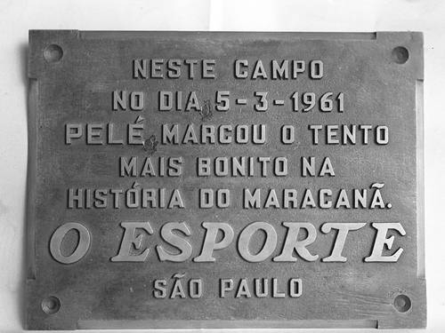
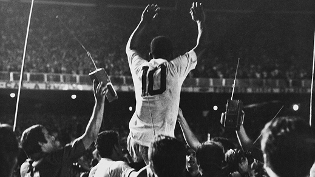
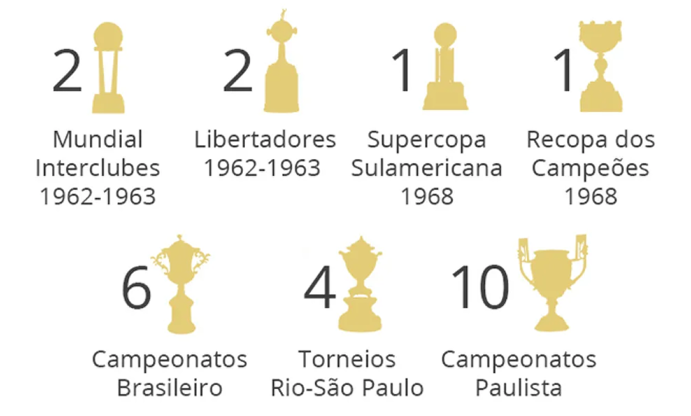

O Santos de Pelé
Surge um jovem promissor
Sua história com o clube começa em 7 de setembro de 1956, na partida entre Santos e Corinthians de Santo André, quando, logo em sua primeira partida, entrando no segundo tempo, ele balança as redes. Com apenas 15 anos, iniciava-se a história do maior gênio já visto nos campos.
A virada de chave para o Rei aconteceu em 1957, quando Walter Marciano Del Vecchio, então camisa 10 titular do Santos, se lesionou, e Pelé, com 16 anos, assumiu o número que, anos depois, por causa dele, se tornaria o mais lendário do futebol.
Gol de placa
Em 1958, além do título inédito da Seleção na Copa do Mundo, ele foi campeão pelo Santos no Campeonato Paulista, com um recorde impossível de ser batido: 58 gols em 38 jogos.
Nesse período, em que o futebol brasileiro não contava com muitos campeonatos a serem disputados, o Santos realizava diversas excursões ao redor do mundo, com destaque para goleadas sobre gigantes como Barcelona e Milan.
A famosa expressão “gol de placa” surgiu em um jogo entre Santos e Fluminense, em 1961, em que Pelé percorreu o campo inteiro, driblou seis marcadores, mais o goleiro, e marcou. Infelizmente, esse gol não foi televisionado; então, foi colocada uma placa no Maracanã (estádio em que o gol foi marcado), em homenagem ao gol mais bonito já visto no estádio.

Em busca do 1000º gol
Em 1962, além do já mencionado título da Copa pela Seleção, esse ano foi marcado pela grande quantidade de títulos conquistados por Pelé, começando pela Libertadores, em que o Santos venceu o Peñarol e conquistou o primeiro título da competição de sua história, sendo também o primeiro clube brasileiro campeão. Ainda falando dessa edição do torneio, o clube aplicou a maior goleada da competição até hoje, com o elástico placar de 9x2 sobre o Cerro Porteño.
Depois de vencer a Libertadores, o Santos conquistou o Mundial contra o Benfica de Eusébio, com três gols de Pelé no jogo de volta. Além desses títulos, naquele ano Pelé também venceu o Campeonato Paulista e a Taça Brasil.
No ano seguinte, ele repetiu o feito, vencendo o Boca Juniors na final da Libertadores e, mesmo com o Rei se lesionando na final do Mundial contra o Milan, o Santos venceu e se tornou bicampeão mundial.
1965 foi marcado pela pausa do Santos nas disputas da Libertadores e dos Mundiais, por motivos financeiros, focando, assim, apenas em excursões ao redor do mundo. Em uma dessas viagens, em 1969, o Santos visitou a África a convite para um amistoso. O problema é que, na época, o continente enfrentava uma guerra civil, e graças à vinda do Santos de Pelé, a guerra parou para assistir o Rei jogar. No mesmo ano, o Santos jogou contra o Vasco no Maracanã, partida que ficou marcada pelo tão esperado milésimo gol do Rei.

Em 1974, aos 33 anos, Pelé teve uma despedida emocionante na Vila Belmiro. Ali se encerrava uma história que jamais existirá igual. Em 2022, o Rei nos deixou, mas nossa admiração e gratidão por tudo o que ele fez pelo Santos, pela Seleção Brasileira e pela história do futebol serão eternas.
Pelé em números
- Período que atuou no Santos: 1956 a 1974
- Jogos: 1.116 (Jogador com mais jogos disputados)
- Gols: 1.091 (Maior artilheiro)
- Com 26 títulos oficiais, Pelé é o maior vencedor da história do clube
